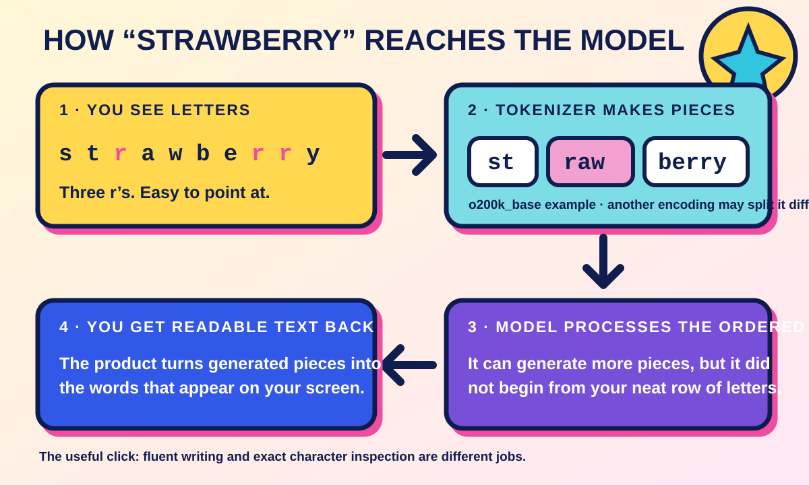

Chapter 2 · How language reaches a model
Tokens: why AI can write a paragraph and still trip over a word
Count the rs in strawberry. You can see them: one near the front, then two together near the end. Three. No calculator. No emergency meeting. No tiny pair of reading glasses.
So why did this simple question become a famous way to catch chatbots looking unusually flustered?
Current AI products may answer it correctly. The interesting part is not whether one chatbot passes one trick question today. The interesting part is that you and a language model do not begin with the same view of the word.
You see a neat row of letters:
s · t · r · a · w · b · e · r · r · y
Before a language model works with that word, a piece of software called a tokenizer divides the text into reusable pieces called tokens. A token might be a whole word, part of a word, punctuation, a space or a single character. It is not automatically a word, a letter or a little parcel of meaning.
Using OpenAI's o200k_base encoding, strawberry is split like this:
st | raw | berry
Another encoding may split the same word differently. That label matters: this is one real example, not the one eternal strawberry arrangement handed down on a stone tablet.
The model processes the ordered pieces. When it generates a response, the product turns generated pieces back into readable text for you. That middle step is easy to miss because the chat box makes the exchange feel as though the model saw exactly what you saw.
It did not.
The Rewind Era version
Think about making a sentence from words clipped out of old magazines. If the word you need is already in the pile, brilliant: use the whole clipping. If it is not, you assemble it from smaller scraps.
That is the useful part of the analogy. A tokenizer also reuses larger and smaller text pieces instead of insisting that every piece must be one full word.
Here is where the analogy stops. The tokenizer is not rummaging through Sassy with taste, intention or a glue stick. It follows a fixed encoding. And its pieces are not tiny meanings. The piece berry is a bit of text the model can process; it is not a miniature fruit concept living inside the machine.

What the strawberry example actually shows
Look again at the split: st | raw | berry.
The three rs are tucked inside two pieces: one in raw, two in berry. A person can point at the letters directly. A model beginning with token pieces has to recover that letter-level detail from inside the pieces, learn a reliable way to handle it, or use another method that can inspect the characters.
Tokenization is therefore one reason letter-by-letter jobs can be unexpectedly awkward for a language model. It is not a curse that forces every model to answer incorrectly. Models can learn character patterns, and products can give them tools that count precisely. The point is simpler and more useful: fluent writing does not prove that the system handles every tiny feature of text the way you do.
That explains how a model can produce a polished paragraph about fruit cultivation and still need extra care with the letters in strawberry. Different jobs expose different parts of the system.
Where tokens turn up in real life
1. A context window is measured in tokens.
The context window is the amount of material a model can work with in one run. Your message, earlier conversation supplied by the product, attached material, retrieved passages, instructions, tool results and the model's response can all use part of that space. A “100,000-token context window” does not mean “100,000 words,” and it does not promise that every included detail will be used correctly. It tells you the size of a token allowance for that model and product setup.
2. Some AI services meter API use in tokens.
An API is a way for one piece of software to use another service. Developers may be charged for tokens sent to a model and tokens generated in return. If you use an ordinary consumer chatbot, you do not need to count every token like loose change at the bottom of your handbag. If you build or budget an AI service, token use can affect cost and capacity, so you check the provider's current documentation rather than relying on an old rule of thumb.
3. Exact text jobs deserve exact methods.
If the task depends on every character—counting letters, checking a code, preserving a legal clause or matching an identifier—say so. Ask for a character-by-character check or use a simple text tool that can inspect the exact string. A beautifully worded answer is not evidence that every character was handled correctly.
4. Token counts vary.
Different encodings can split the same text differently. The split can also vary across languages and kinds of text. That is why “one token equals one word” is not a safe conversion.
The connection to the rest of the system
Tokens are the handoff between the words you type and the numerical work a language model can perform.
your text → tokenizer → token pieces → model → generated token pieces → readable response
The product gathers the text for the current job. The tokenizer divides that text into pieces. The model processes those pieces within a limited context window and generates more pieces. The product turns the result back into the words you read.
That sequence connects several ideas people often discuss as though they were unrelated. More text usually means more tokens. More tokens use more context space. Processing more tokens creates more work for the hardware running the model. In an API, those tokens may also affect the bill.
It does not follow that one token has one fixed energy cost, price or unit of intelligence. The model, hardware, software, workload and provider all matter. A token is a unit in the text-processing route, not a universal AI calorie.
The question to take with you
How was this text split, what else is sharing the context window, and do I need a language answer or an exact character check?
Separate lookup route
Concept Index · Token
- Plain-English meaning
- A reusable piece of text that a language model processes. It may be a whole word, part of a word, punctuation, a space or one character.
- Where it fits
- Text is tokenized before the model processes it. The model generates token pieces, and the product turns them back into readable text.
- Why you will hear about it
- Context limits and some API usage are measured in tokens. Tokenization also helps explain why exact letter-level jobs can be awkward even when the model writes fluently.
- Do not confuse it with
- a word, a letter, a fact, a thought or a fixed measure of intelligence, price or energy.
- See
- Chapter 2, “Tokens: why AI can write a paragraph and still trip over a word.”